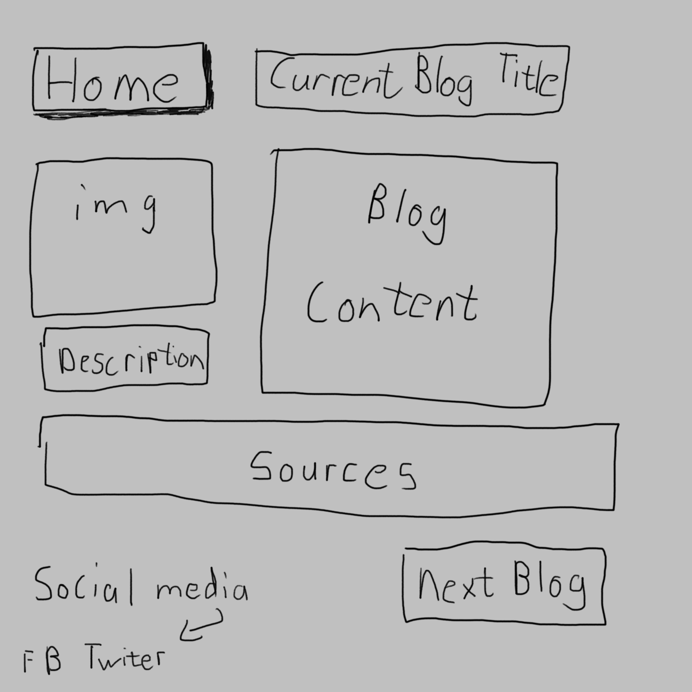
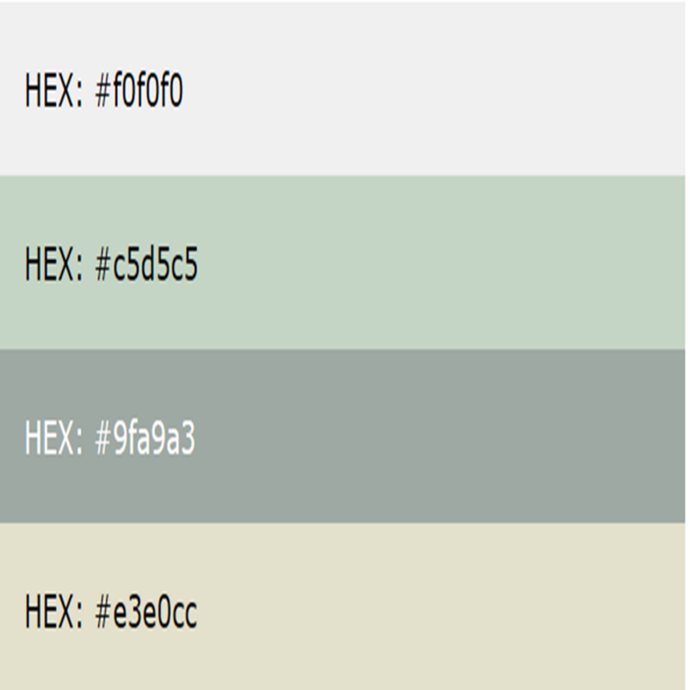
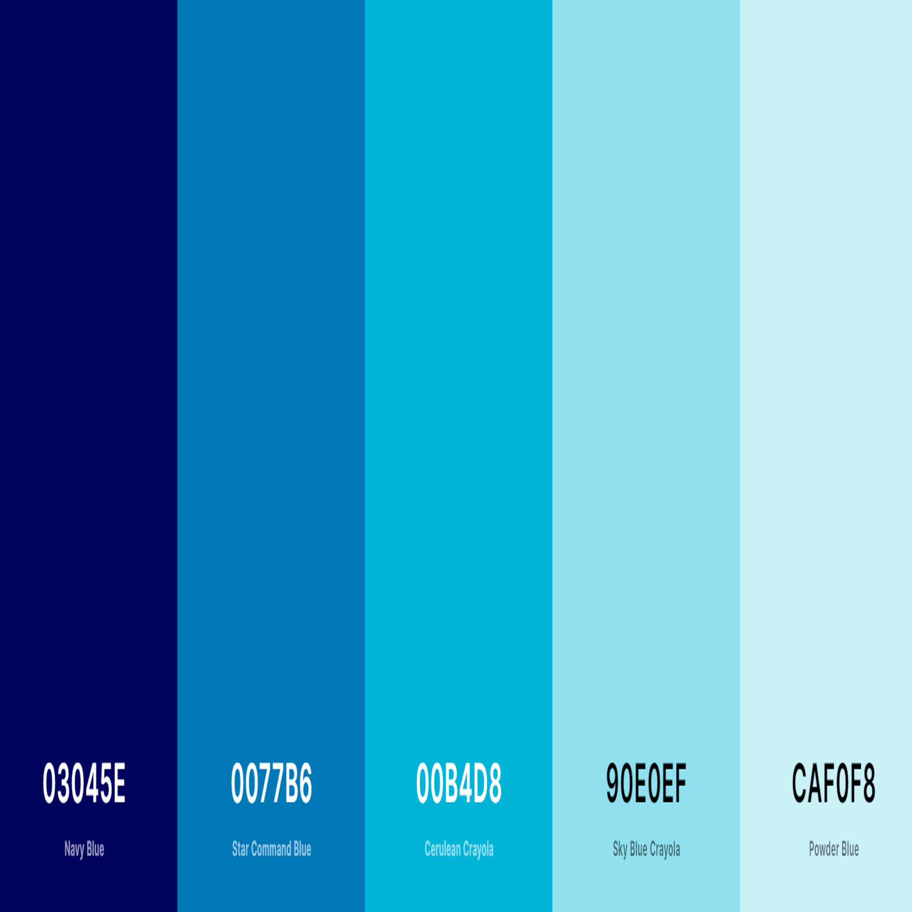
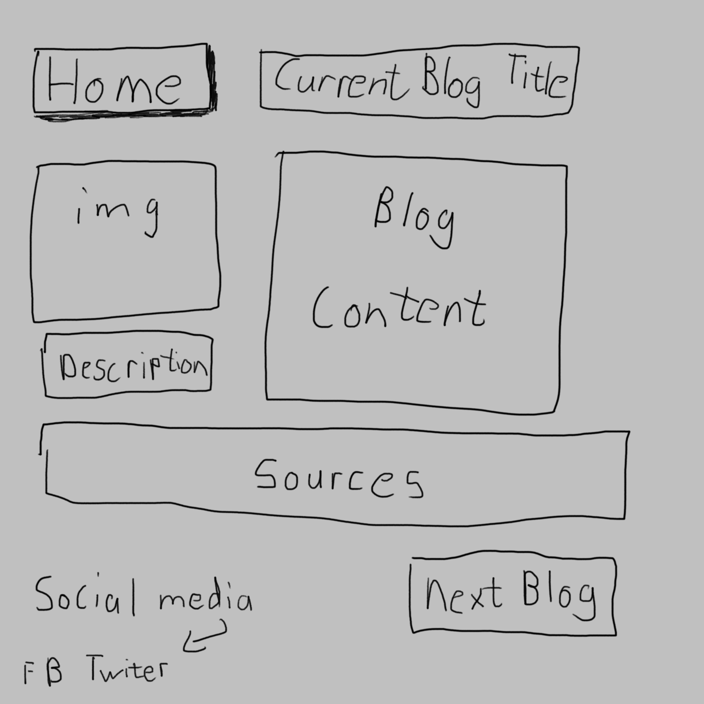
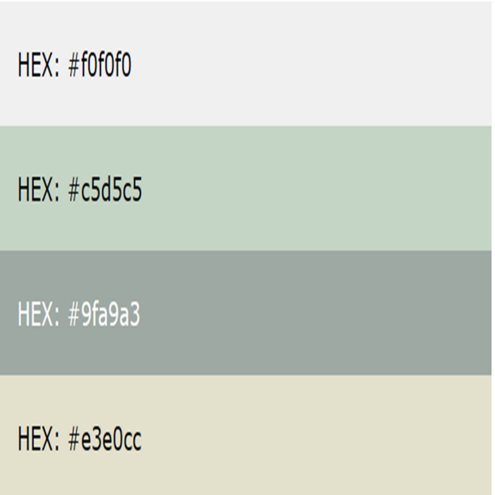
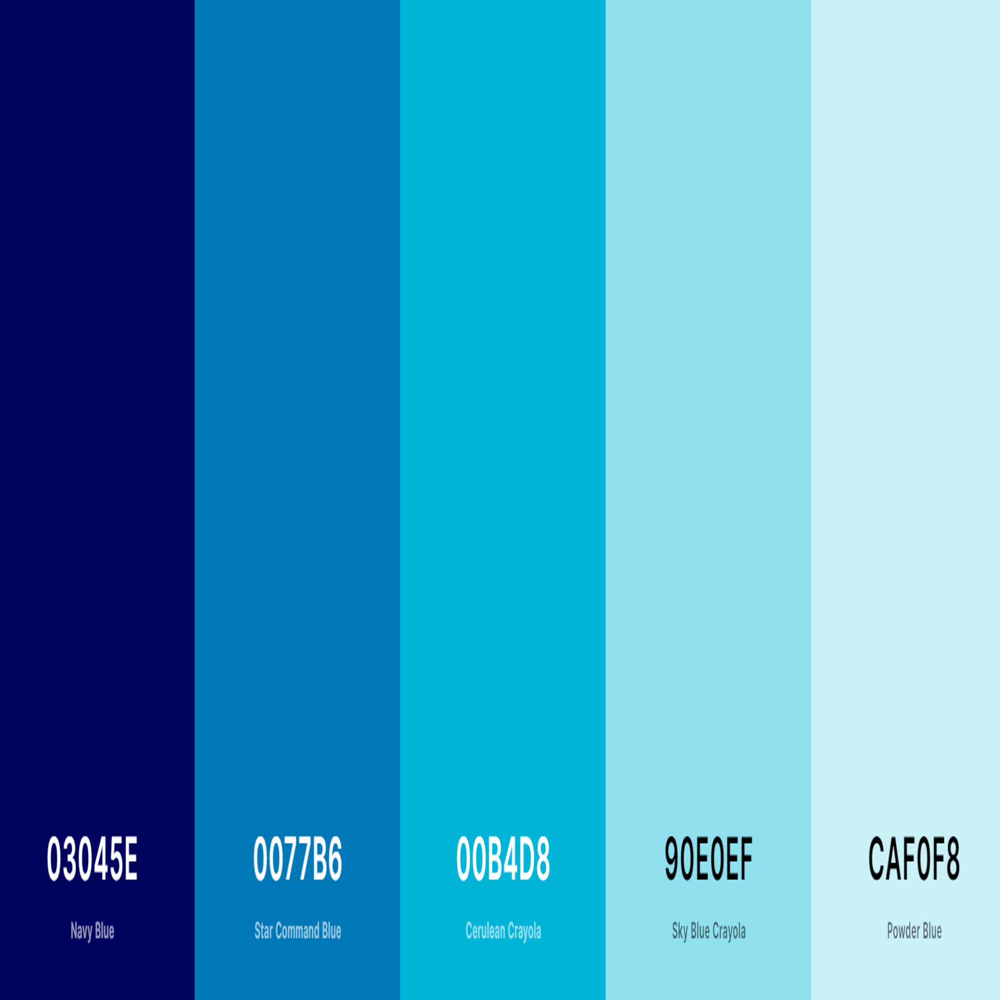

Website styleguide
I have decided use to the range of colour palettes since they are softer on the eye and will cause less visual strain over the period that my website is viewed. I also believe that lighter colours can be used to place emphasis on other element of the website, such as links or just text in general. Dim colour palettes are also a useful option as they provide a sense of relaxation and comfort. The darker fonts will be used to provide headers/ footers while light fonts will be used as panels for textual elements.
 





Web Design Rationale and Reflection
For this website, i would to represent the interests of the character and his ideas on narrative pleasure. I want the site to contain more of the characters hobbies and showcase a relationship between character and the content that he creates. The wireframes provide the ideal webstite structure that i am looking to ahieve. The site is still not close to what i want it to be due to my lack of knowlegde in the field of software development. however, the development proccess has given me a beter understand of the mechanics and dynamics in web design. I hope to further extend the capabilities of the website in future iterations.